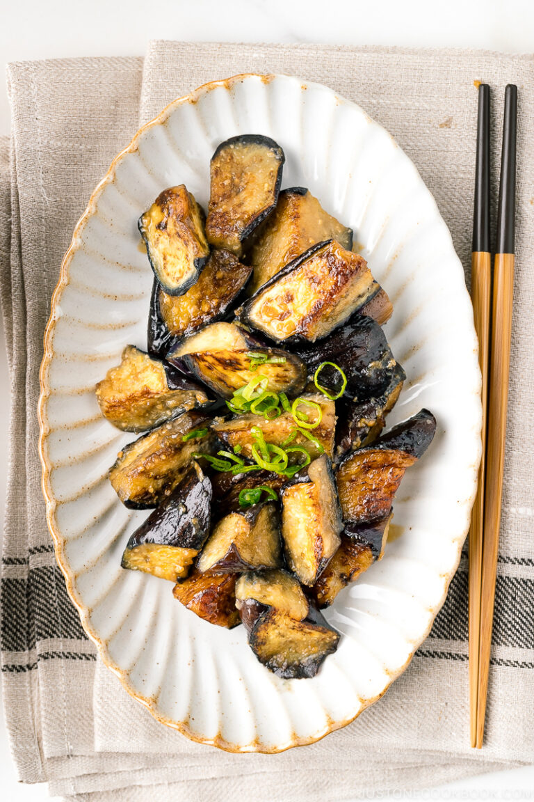

Miso Eggplant
Homepage

Ingredients
- Eggplant
- Green onion
- Sesame oil
Miso Sauce
- 2 tbsp Sake
- 2 tbsp Mirin
- 1 tbsp Miso
- 1 tsp Soy sauce
Method
- Cut the eggplant into bite-size pieces. The Japanese "rangiri" cutting technique is reccomended.
- Cut the green onions into thin slices
- In a small bowl, combine all the ingredients for the miso sauce.
- Heat a large frying pan over medium heat.
- When it's hot, add the sesame oil and distribute in the pan. When the oil is hot, add eggplant.
- Cook the eggplants on medium heat, flipping them when the bottom side is brown.
- When the eggplants are nicely browned, add the miso sauce and coat them with the sauce by shaking the frying pan.
- When the liquid is evaporated, remove the pan from the heat immediately.
- Transfer to a serving plate and garnish with green onion.
View the original recipe from Just One Cookbook here!
Homepage